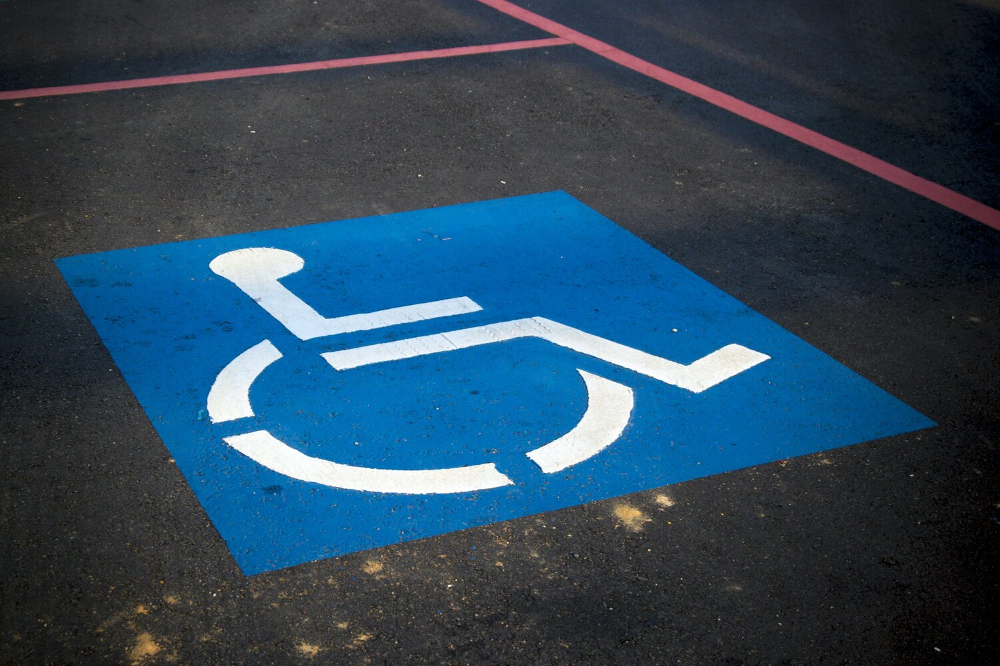

Government of the District of Columbia
Accessible streets and transit are a right — not an afterthought.
The Multimodal Accessibility Advisory Council advises the Mayor, the DC Council, and District agencies on making the city’s sidewalks, transit, and public space usable by everyone — especially the people most often left behind.
Who we are
A standing council with one job: keep the District honest about access.
MAAC is an independent advisory body established by the DC Council under the Transportation Reorganization Amendment Act of 2015. Six community members — appointed by the Mayor from the disability advocacy community — advise District agencies on multimodal accessibility, hold them accountable with data, and carry the lived experience of disabled residents into rooms where transportation decisions get made.

Why it matters
Who depends on an accessible District
Disability and carless households are overrepresented in the District’s poorest wards — where trips already take two to three times longer. Access is an equity issue.
What we do
Advice backed by evidence and lived experience
Set priorities
We adopted a clear hierarchy for arterial street space: wide sidewalks first, 24/7 bus lanes second, ADA pick-up/drop-off third — private car storage last.
Write the asks
Formal letters and resolutions to DDOT, DPW, DFHV and WMATA — daylighting enforcement, accessible PUDO zones, bus-stop markings, side-loading wheelchair vans.
Keep score
Our Report Card tracks five metrics the District can’t hide from — from accessible pedestrian signals to sightline-law compliance.
Testify
We deliver annual oversight testimony to the DC Council’s Committee on Transportation and the Environment.
Convene agencies
Every month we host District and regional leaders — DDOT, DFHV, DPW, WMATA — in public, on the record.
Center disability
Members live the “last ten feet” problem daily. That experience shapes every recommendation we make.
Open to the public
MAAC meets the second Wednesday of every month
5:30–7:00 PM ET. Meetings are held virtually over Google Meet, with a dial-in option. ASL interpretation is provided; other accommodations available on request.
ESTABLISHED IN LAW
D.C. Code § 50–2361.31
MAAC is a permanent body of the Council of the District of Columbia. Read the statute →